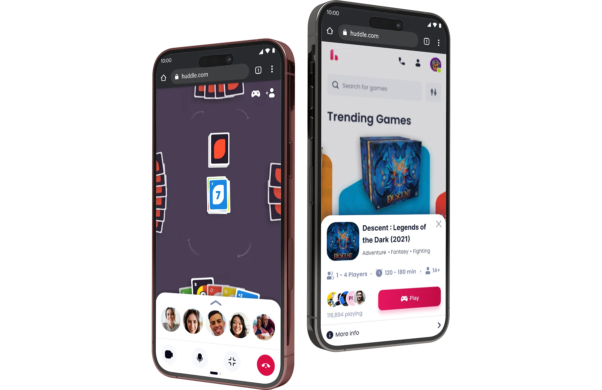
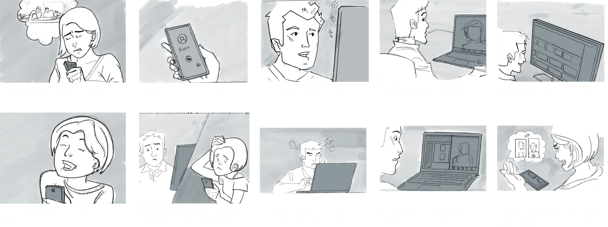
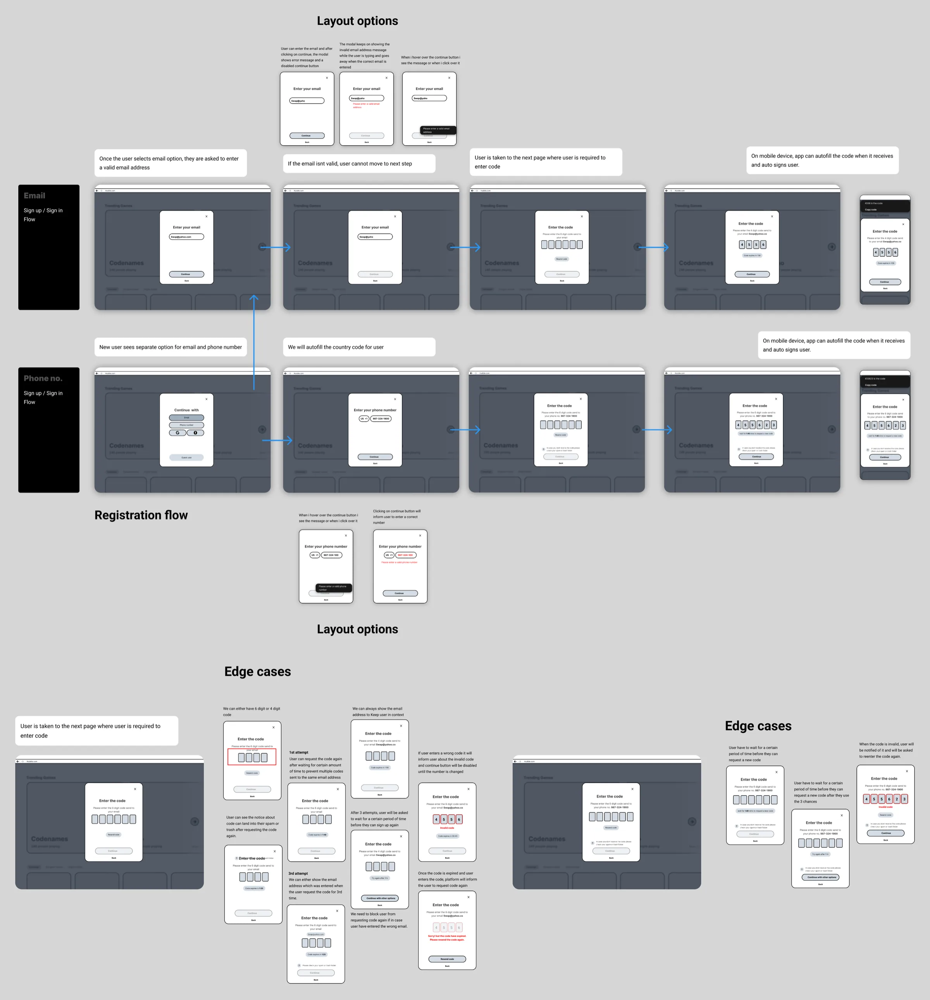
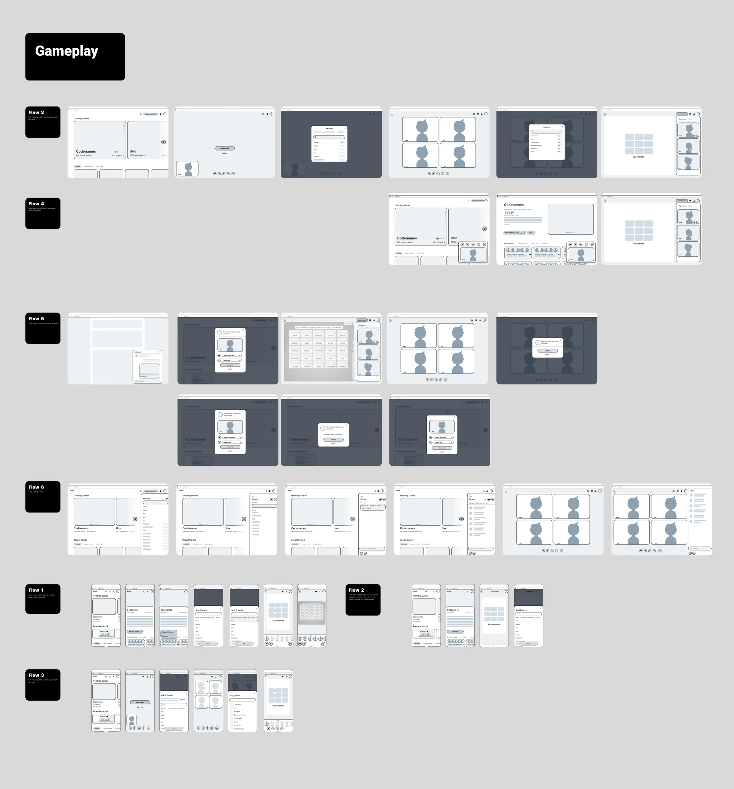
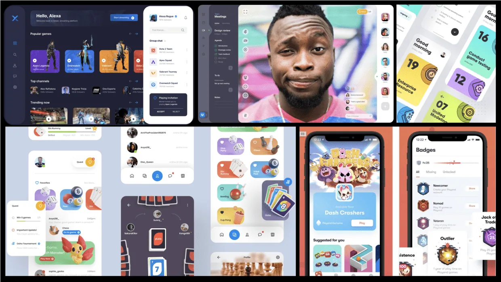
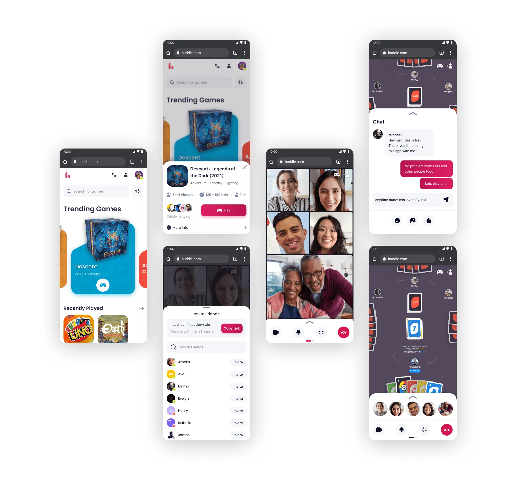
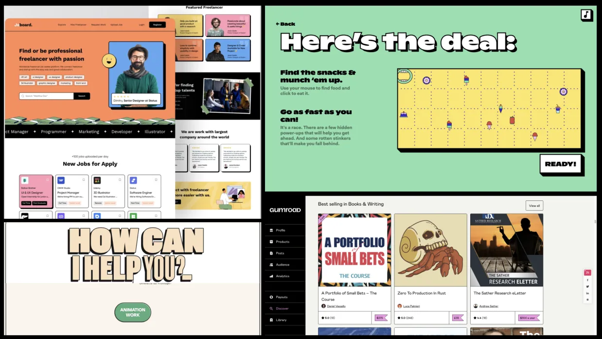
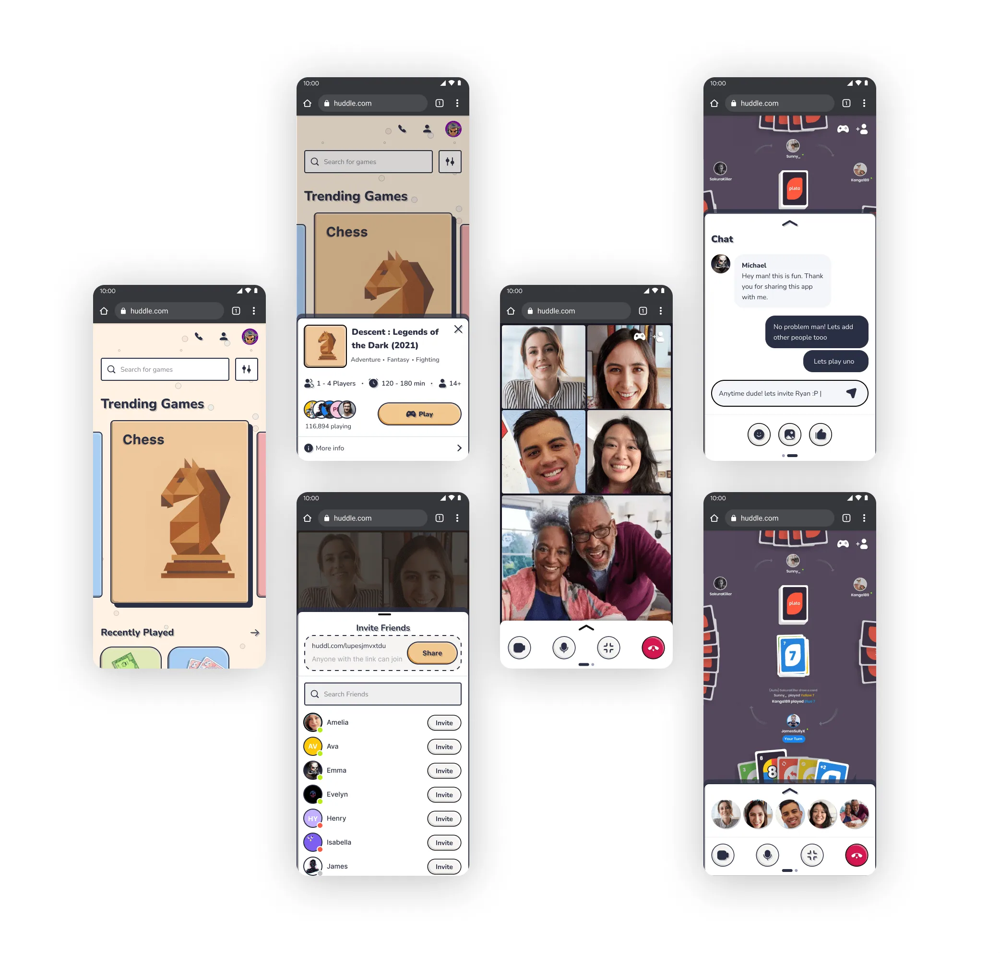
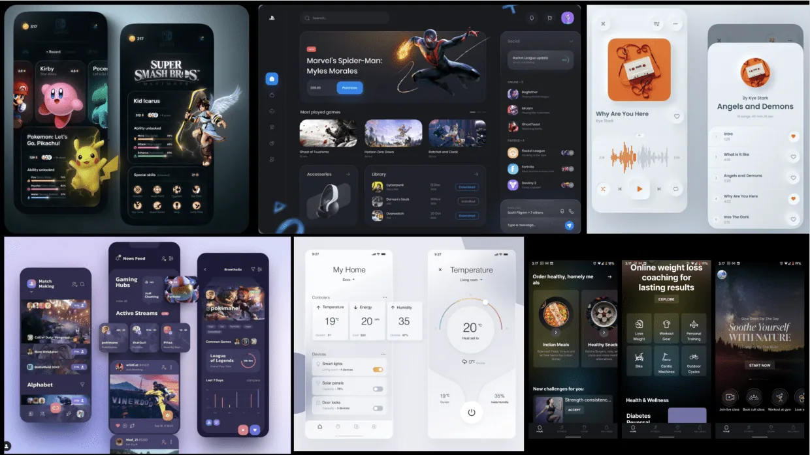
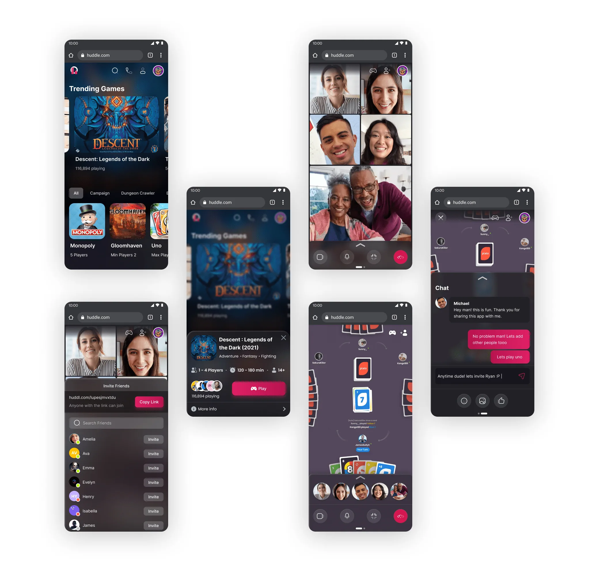

CONNECTING THROUGH BOARD GAME
An early approach towards connecting closed ones through their mutual love for board games.

Overview
Huddle was created to address the pressing need for connection during the pandemic. Our research revealed that people coped with isolation by participating in activities such as playing games, cooking, and spending time together in their own spaces. This shared experience strengthened their bonds even in the toughest of times. With in-person events and visits being unavailable, games became a priority and a way to bring people closer.
At Huddle, we saw an opportunity to develop an app that would allow friends and family to virtually share a space and play board games together. Leveraging our strong technical expertise, we believe that Huddle will effectively serve this community of individuals looking for a fun and meaningful way to connect during this challenging period.
Despite the project being discontinued for business reasons, it was a valuable learning experience collaborating with a talented team of engineers, researchers, and a product manager to create early prototypes. The process of ideating, testing, and refining our solutions allowed us to deepen our understanding of the problem and demonstrate our capabilities as a team. Although the project did not reach its full potential, I'm grateful for the opportunity to be part of such a dynamic and challenging project.

How might we create a virtual platform that facilitates shared experiences and strengthens relationships among closed ones?
Design framework
Our research studies revealed that people are dedicating a significant amount of their time to playing board games, both physically and digitally, as a way to cope with the effects of social isolation. In response to this finding, we aimed to create a centralized platform that provides easy access to a wide variety of games. Through our research, we established the following design guidelines:
Lightweight - At Huddle, simplicity is a top priority. Our goal is to design the platform in such a way that even a toddler can use it with ease. We will carefully curate the content and features to ensure that only the most essential and relevant information is displayed.
Wholesome - At Huddle, delivering the highest quality content and customer care to our users is our primary objective. We strive to be a trusted source of information and support, just like a friendly neighborhood board game store providing them with a positive and enjoyable experience.
Playful - Huddle is all about play and having fun. Our goal is to create an experience that is not only functional, but also joyful. To do this, we will sprinkle moments of delight throughout the platform, utilizing color and animation in unexpected and delightful ways.
Ideation
To create the first iteration of our product, I worked closely with the Product Manager and Engineering Manager to determine the most important features necessary for playing 2-3 basic board games. This collaboration resulted in the creation of early mock-ups for the registration process, inviting friends, and launching games. I then reviewed these designs with the engineering team to ensure their technical feasibility and make any necessary modifications to ensure a seamless user experience.


Visual explorations
To create the first iteration of our product, I worked closely with the Product Manager and Engineering Manager to determine the most important features necessary for playing 2-3 basic board games. This collaboration resulted in the creation of early mock-ups for the registration process, inviting friends, and launching games. I then reviewed these designs with the engineering team to ensure their technical feasibility and make any necessary modifications to ensure a seamless user experience.

01
Playful
This direction looks to create a clean and minimal UI. It intends to popularize the game and its content through the generous use of space in and around UI components, typographic hierarchy, and subtle but playful use of colors.

02
Audacious
This user interface style draws slight inspiration from the Bauhaus design philosophy, which emphasizes the use of simple geometric shapes. The bold use of color, playful 2D forms, and large typography imbue the environment with a lively and playful energy. The crisp black lines defining the components, along with the flat, whimsical illustrations and visuals, capture the essence of eccentricity.



03
Immersive
The goal of this design direction is to seamlessly integrate the game and platform experience into a unified user interface. With the game as the focal point, the UI blends into the background using elements such as lighting, depth, material, and scale. This approach immerses players into the game's theme and surroundings, avoiding distraction from the platform's user interface.

Approved design style
Although our project was discontinued, I was fortunate enough to present my work and mood boards to the stakeholders. The playful theme was highly praised for its simplicity and versatility, as it could easily be incorporated into various genres of games.